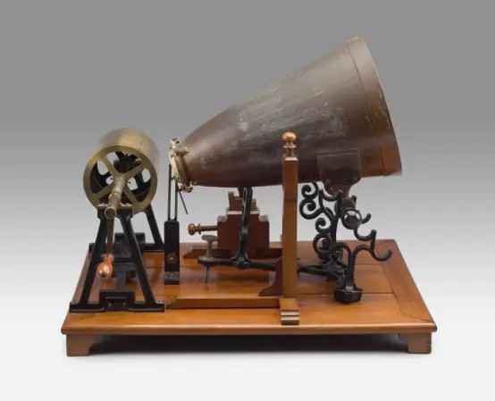
声音从瞬逝中，获得「留存」
在留声机诞生之前，想听音乐只能去现场——那是达官贵人的消遣，平民百姓只有自己的哼唱。 1857 年，法国发明家斯科特做了一件近乎浪漫的事：让一支针尖随声波的起伏起舞， 在涂黑的纸面上刻下蜿蜒的痕迹。他记下了声音的形状，却唤不回声音本身。 这是人类第一次，把「听见」变成了「看见」。
一段正弦波，就是一粒声音的原子
上下拖动左侧旋钮调音量，拖动右侧旋钮逐层叠加谐波。观察示波器与频谱仪如何同步变化——你会发现，所有复杂的声音，都是正弦波叠出来的。
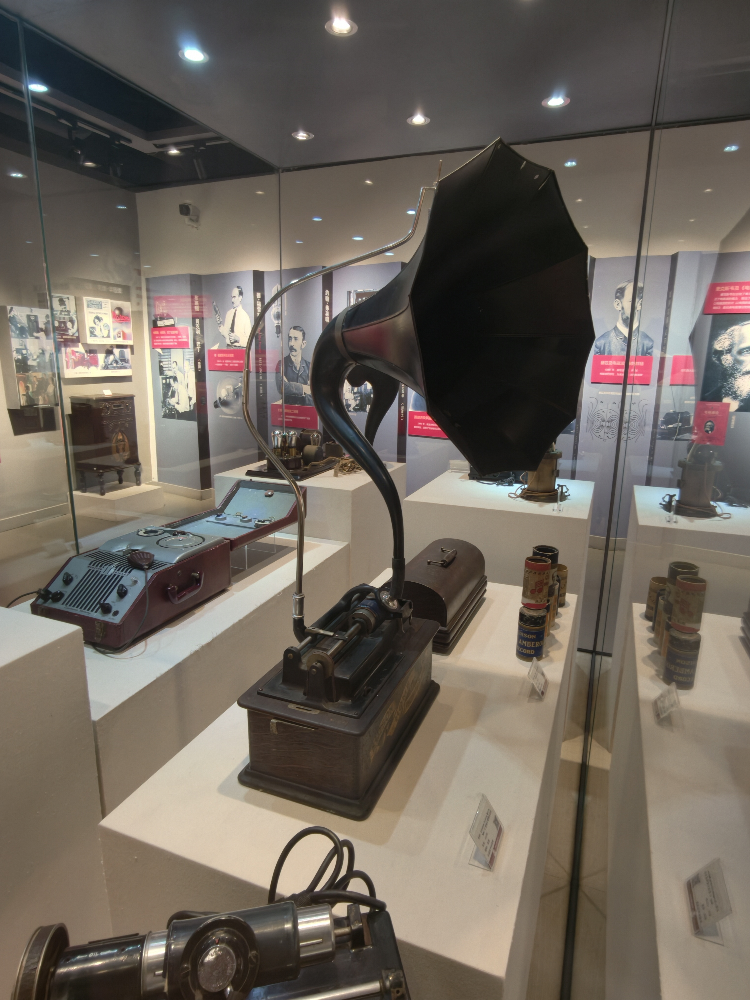
声音从沉寂中，获得「回响」
爱迪生从电话传话器里得到灵感：既然声音能让短针颤动，那么颤动能否换回声音？ 1877 年 8 月，助手柯尔希照着图纸做出那台机器——大圆筒、曲柄、说话机，以及一卷锡箔。 爱迪生对着它唱了一首童谣。当曲柄再次转动，那个已经消失的声音，从针尖下爬了出来。 世界为之轰动，人们称他为「科学界的拿破仑」。
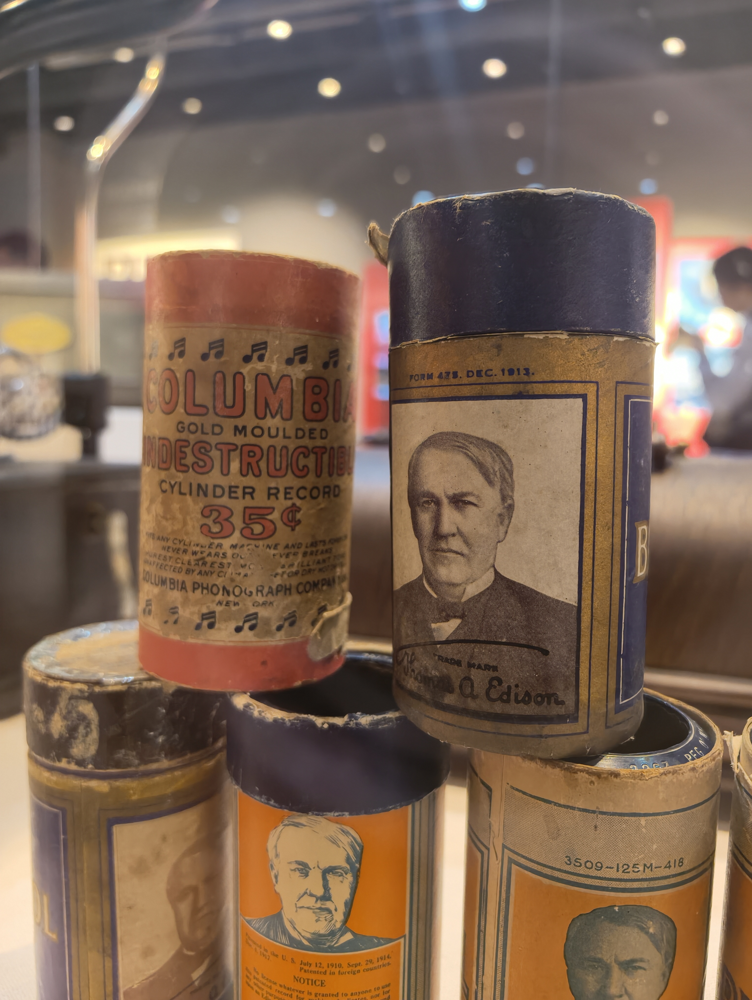
声音从孤本中，获得「副本」
圆筒有个致命伤——它无法被复制。录一支小乐队要十台大喇叭留声机同时开工， 演奏二十遍才得两百份拷贝，像罚抄课文，绑两支笔也只能抄两遍。 1887 年，旅美德国人伯利纳把声音刻进一张扁平的圆盘； 1888 年 5 月 6 日，费城，世界第一张碟形唱片开始旋转。 两种介质僵持了二十年，唱片赢了。
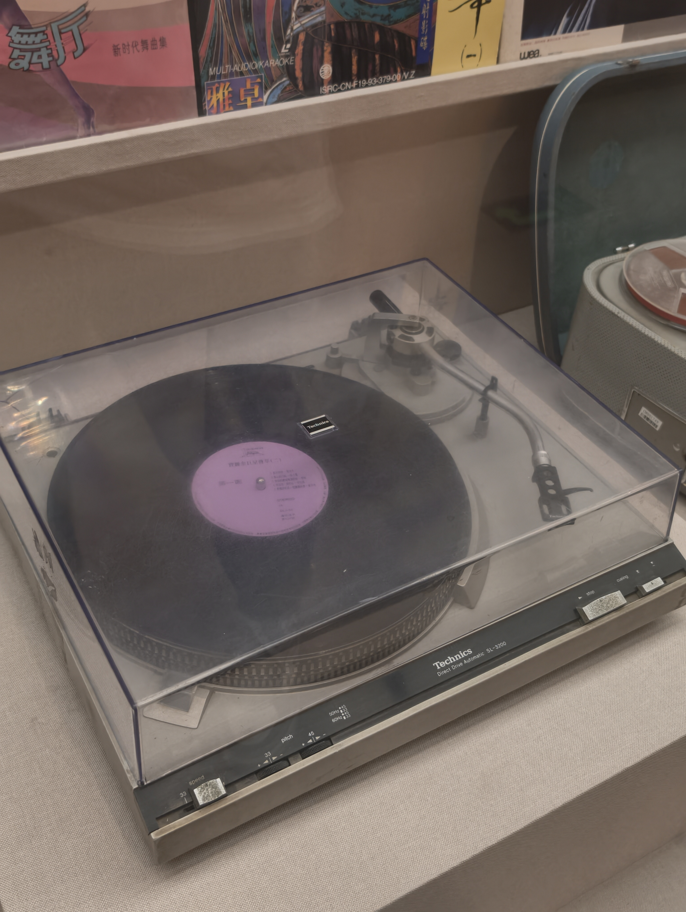
声音从长度中，获得「无限」
丹麦工程师普尔森让电流穿过线圈，钢丝被切成无数微小的磁铁，按声音的强弱排成队列。 声音从此不再只是刻痕，而是磁的记忆——录，是声波化作电流、电流化作磁场； 放，是磁场化作电流、电流化回声波。理论上，只要有一根绕地球一圈的钢丝， 就能录下绕地球一圈的声音。
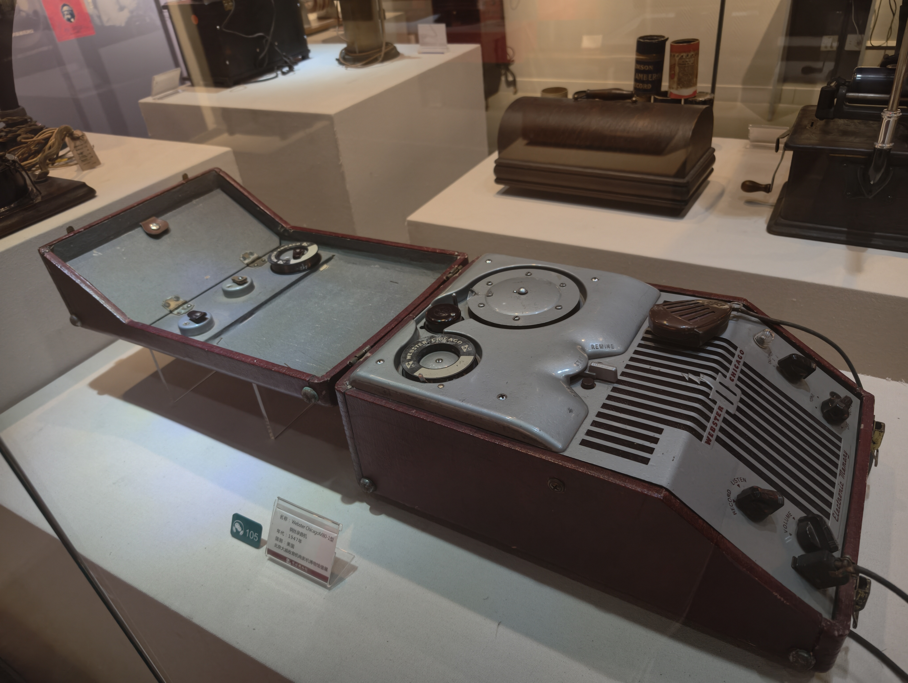
声音从失真中，获得「保真」
电气录音之前，声音只能靠机械驱动：乐手要把头伸进大喇叭口， 德国人甚至造出喇叭与小提琴杂交的怪乐器来凑音量，音色却一塌糊涂。 1925 年，贝尔实验室的电气录音与电动麦克风降临， 频率响应从 200–2000Hz 一跃到 100–8000Hz。钢琴终于像钢琴，乐队终于像乐队。
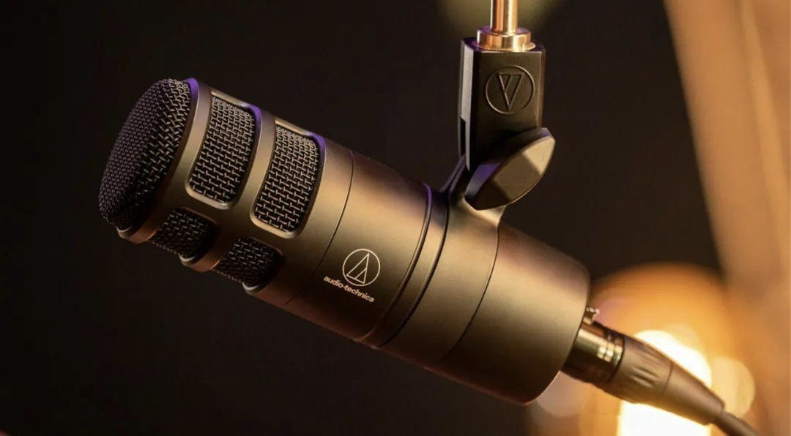
声音从短促中，获得「完整」
1931 年，RCA 研制出 33⅓ 转的密纹唱片。转速降下来，播放时间就长上去； 材料从虫胶换成更细密的材质，颗粒更细，能刻下更微小的震动，高保真由此成为可能。 1948 年，哥伦比亚公司大批量生产新一代 LP，黑胶时代正式到来。 1950 到 1970 年代，那些把录音当作艺术而非生意的录音大师， 与指挥大师和顶级乐团一起，留下了无数传世的声响。
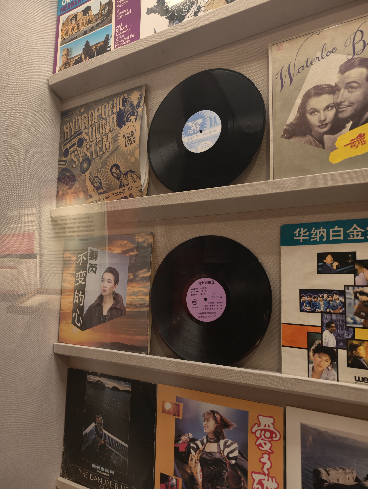
声音从笨重中，获得「轻便」
RCA 推出 45 转唱片：直径更小、更薄、不易碎，运输成本低； 音质优于 78 转，甚至比部分 LP 更好。它配上自带喇叭的便携唱机， 成了青少年的口袋乐队，催熟了 1950 年代的单曲市场—— 那种「一张碟两三首歌」的迷你专辑形态，一直沿用至今。
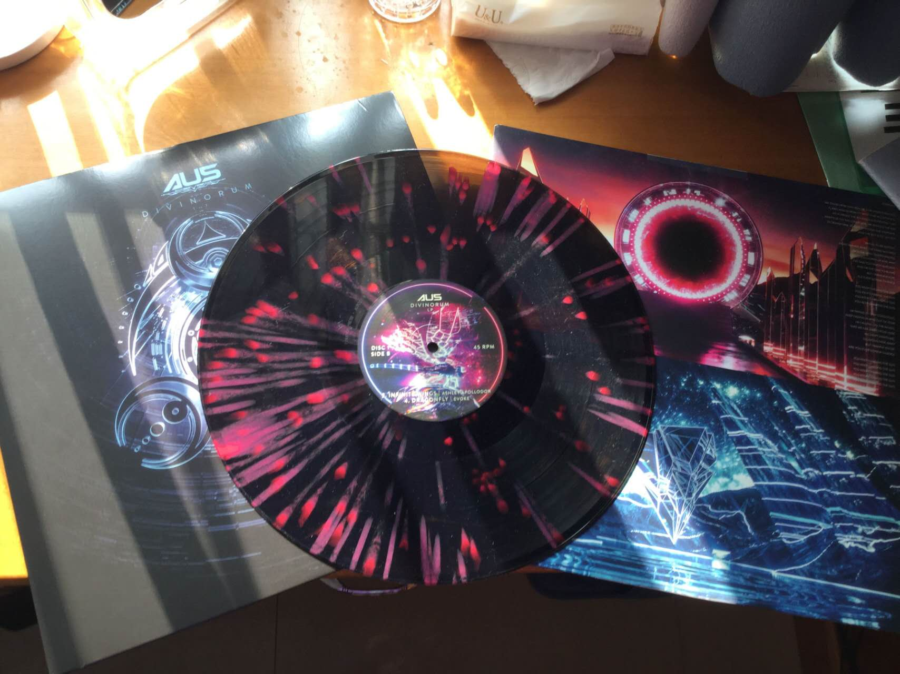
声音从定型中，获得「剪辑」
1935 年，德国通用电气公司造出使用塑料磁带的录音机。 1963 年，飞利浦把磁带装进一只双面塑料小盒——盒式磁带诞生， 体积只有早期循环磁带机的四分之一，每面能装 30 到 45 分钟。 录音时长不再受限，可靠、机动，还能剪开重接。 1971 年磁带被认真用于音乐录制，1976 年首盘 120 分钟磁带问世。
声音可剪辑之后诞生的技术——采样
“文化与科技一样，都是通过积累才得到发展，每个创作者都会从过去吸取精髓运用在自己的作品上。过度地保护会扼杀本应加以栽培的创造力。”
20世纪80年代采样器的诞生彻底改变了音乐的面貌。实际上，它们对音乐有如此重大的影响，现在所有的商业音乐，不仅是舞曲，都或多或少地证明了这一点。不仅是因为市面上各种各样的采样盘，尽管它们的的确确用途多多，而更是因为采样器已经成为最能发挥创意的乐器之一。
通过一些奇思妙想，乒乓球砸在车库门上的声音可以变成通鼓，报纸卷敲打墙面的声音可以当作完美的底鼓，而吸尘器的嘶声可以制作踩镲。作为制作音乐的一种方式，采样成为了一种快速、简单以及极具创意的音源。
简单地说，可以将数字化的采样器类比为模拟录音机，但它不是将信号录制在磁带上，而是数字化地录在随机存储器（RAM）或直接录制在硬盘上。声音录制下来后，就可以利用一系列编辑参数来处理，这点与合成器很类似，能够通过键盘来演奏不同音高。音高的变化由采样器产生，它根据演奏的音符相应升高或降低采样音色的原始音高。增加音高频率就上升，而降低音高则频率下降。
采样技术应用的最有名的例子，是一首发布于1969年的一首单曲“Amen Brother”，其中一段6秒的鼓组（又名Amen Break）被后世采样无数次，直到今天还有人在使用该采样进行音乐创作。
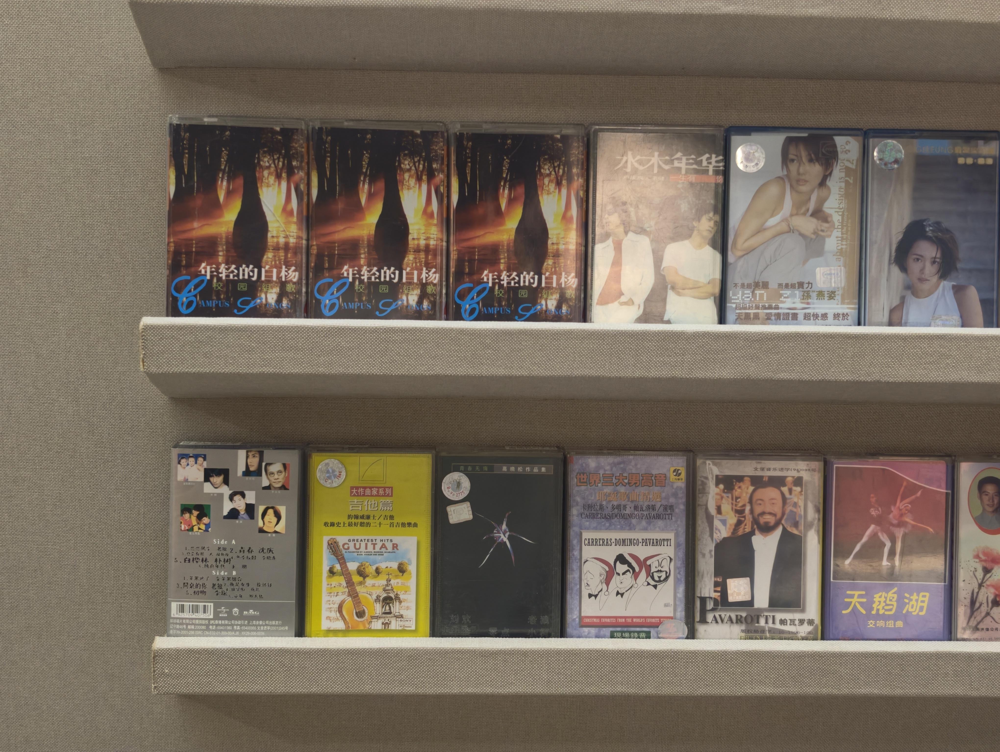
声音从公共中，获得「私密」
在那之前，人们背着硕大的双喇叭录音机边走边唱。 索尼 Walkman 出现之后，耳机线垂下来，世界退到身后—— 音乐第一次只属于一个人。盒式磁带取代黑胶， 成为便携音乐市场的象征。城市从此有了自己的背景音。
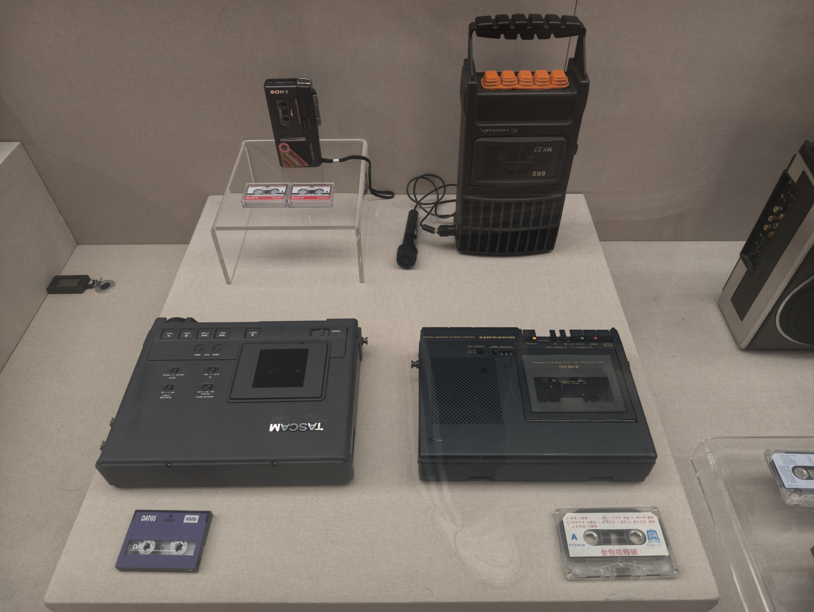
声音从底噪中，获得「纯净」
1974 年，飞利浦与索尼联手发表音乐光盘。1982 年 10 月 1 日， 索尼在日本发布世界第一部商用 CD 播放器 CDP-101；同一年， 全球首张 CD 在德国汉诺威的飞利浦工厂诞生。 黑胶那「丝丝啪啪」的底噪退场，取而代之的是一种如水晶般透明清澈的聆听体验。 数字音频的序幕，就此拉开。
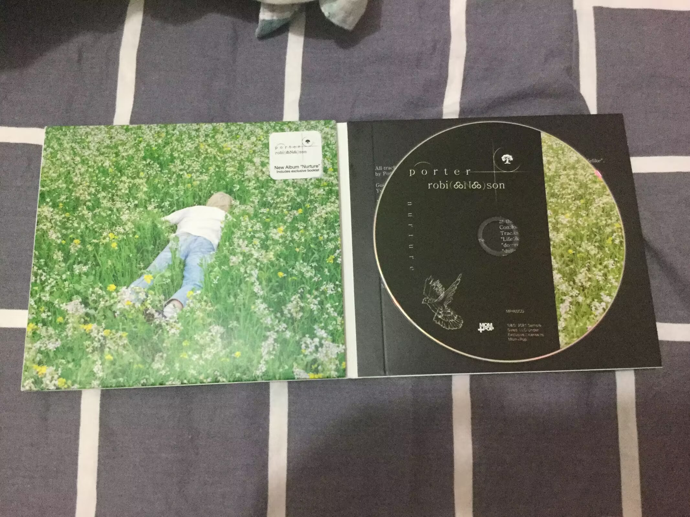
声音从沉重中，获得「轻盈」
更小的体积，尚可的音质，易于播放、制作与分享。 MP3 借着网络在 1990 年代末迅速蔓延，2000 年前后风行全球， 便携式播放器随之普及。代价是漫长的版权纠纷， 唱片工业与创作者的权益被狠狠冲击。 而当智能手机到来，MP3 播放器比它的所有前辈消失得都快。
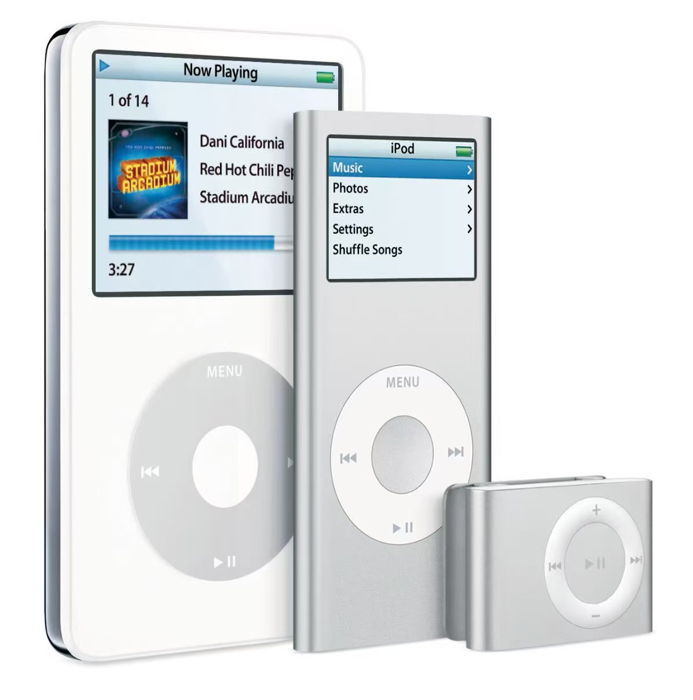
声音从轻易中，获得「郑重」
从爱迪生的锡箔圆筒到云端的一条链接，科技让聆听变得前所未有的轻易， 也悄悄带走了某种仪式感。于是黑胶重新转起来： CD 用二进制记录，与母带之间必然存在信息损失，如同画像与模特； 而黑胶是模拟记录，与母带内容一致，只有转录途中的传输损耗， 如同同一个人在不同时间摆出同一个姿势。